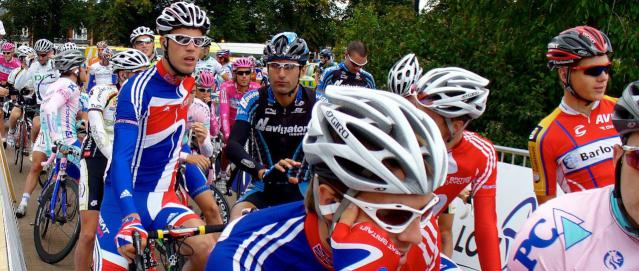
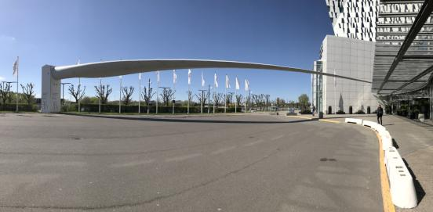

Intro
Accidental UNIX/Linux Sysadmin and
programmer in too many languages. Operations Engineer at
Alfresco.
Dad
Husband
Slow road cyclist
Terrible guitarist
Geek
Record collector
Audiophile
"Mad Cat Lady"
Catholic convert
Code
Open Source
1999-2006
I used to do lots of Open Source stuff between 1999 and 2002.
You can find my code in the released versions of
Pure-FTPd,
Gnu Privacy Guard, official Exim 3 RPM spec, and more.
I also used to have my own public patches for Cyrus-SASL, mod_auth_mysql amongst others.
I also published Perl, JavaScript and other custom RPMs.
Present
I am again allowed to publish open source software and you can see them on
GitHub as well as many
gists.
I've often thought of writing a DNS Server, but it's never happened.
A sketch of the design is available.
About this site
I've had a web site since 1994, and it has been on this domain since 2004. It has
run on many technologies over the years. I used to list them here, but it was a long,
and very boring list.
About

Bio
I come from the West Country of England, and went to the University of Bath.
I now live in the Thames Valley.
Cycling
I love riding a road bike: I commute on one (sometimes), and go out for longer rides at the weekend.
Music
I play the guitar badly. Really badly.
Disclaimer
The postings on this site are my own and do not represent my employer’s opinions.
Licences
"world of nic"
(including all original content, code, markup and images) by
Nic Doye is licensed under the
Creative Commons Attribution 4.0 International License
.
The original design is Dimension by HTML5 UP,
available under the Creative Commons Attribution 3.0 License.
Icons are from Font Awesome Pro .
Research

Background
I received all my degrees from the Department of Mathematical
Sciences at the University of Bath
- BSc (hons) Mathematics 1992
- MSc Symbolic Computation 1993
- PhD Order Sorted Computer Algebra 1997
Areas of research
I'm mainly interested in pure maths, and by chance this has warped
into an interest in many of the areas of computer algebra,
and from there into the theory of object-oriented type systems.
Publications
Open Source Axiom
In 2003 Axiom became available under an open source licence
(and has even forked) but I still haven't got around to adding anything to it.